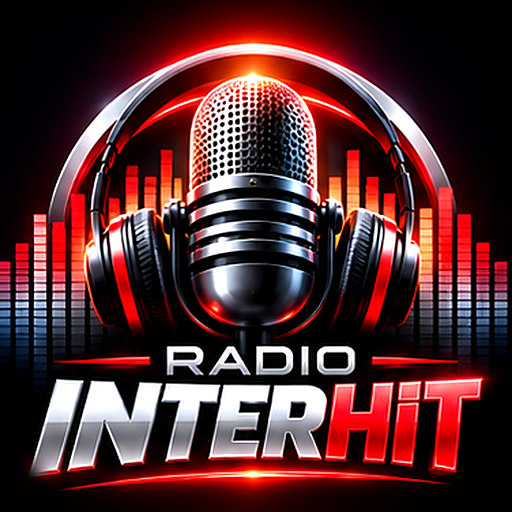

Радио Интерхит
Поръчай си песен
Няма водещ в ефир, затова сам избираш какво да звучи. Поръчките звучат по ред, веднага след песента, която върви сега.
Твоите поръчки
Натиснете „Пусни“, за да слушате.
Сега звучи
Съобщение от радиото
Таймер за заспиване
Таймерът е изключен.
Известия от радиото
Научавайте първи за предаванията и новините на радиото и кога ще прозвучи вашият поздрав.
Пиши ни
Поздравите в ефир са безплатни.
Проверявам…
Ако смяташ, че се справяме добре и искаш да ни подкрепиш, можеш да го направиш тук.
Твоите поздрави
Покани приятел
Звукът се усилва и намалява с бутоните на телефона.